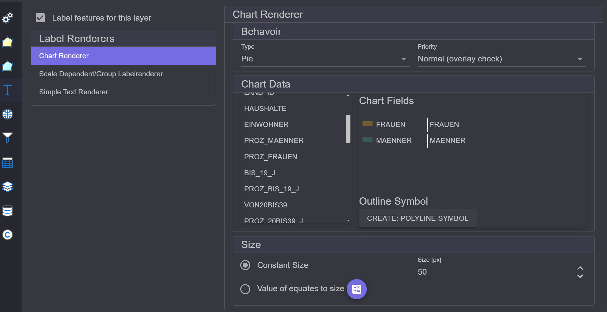

Label Renderer¶
To label the features of a layer, the approach is similar to that used in Rendering. In the
Settings dialog for the layer, on the left, you will find the section Label Renderer. Here,
the checkbox Label features for this layer must first be activated:
Different Renderers are offered here as well.
Simple Text Renderer¶
With this renderer, features can be labeled based on attribute values. This represents the most common use case.
The properties of the Renderer are divided into the following categories:
Field / Expression: Labeling can be done based on a field or an expression. For the
Fieldtype, simply select the field you want to label by:With
Expression, an expression can be defined. When you click onEdit Expression, the Expression Editor opens. Here, an expression can be specified that consists of free text and placeholders (field names in square brackets) for the fields:Field names are listed at the top. By double-clicking on a field, it is added as a placeholder in the expression.
Behavior: Here, the priority of the label is specified:
When multiple layers are labeled, this is done in the drawing order of the layers. To highlight the labels of a layer, the priority can be specified here. The reason is also that labels are only drawn if there is space available on the map. Labels cannot overlap. Therefore, it is possible that a label is not drawn at all. Labels with higher priority have a better chance of being drawn. If the priority
Alwaysis given, it will always be drawn, regardless of overlaps. However, this can lead to illegible labels if too many texts overlap.How many labelsindicates how often a text may occur:One per feature: Each feature is labeled exactly once.One per part: If the feature is a multipart feature, each part of the feature is labeled.One per name: If there are multiple features labeled with the same text, only the first is labeled. This prevents duplicate texts (for this layer) on the map.
Symbol / Cartography: Here, the labeling symbol (font) can be set:
Similar to feature symbology, there is also a Symbol Composer for text symbols here:
There is a
Gallerywith predefined symbols. Different types of symbols can be added via theStack:Simple Text: Just the text, no borderGlowing Text: Text with a colored outlineBlockout Text: Text within a colored rectangle
Note
Glowing and Blockout text improve the readability of text because they stand out better against the background. On backgrounds like aerial images, normal texts are often difficult to read.
Placement / Placement Priority: For point and line themes, it may make sense to determine where the label is placed. This can be controlled through
Placement:The center point would mean that the label is placed directly in the middle of the point or line. Through the priority, alternative positions can be assigned. If the label cannot be drawn due to space constraints, the subsequent specified positions are applied in order until a positive result is achieved.
{kind=link}
{kind=link}
{kind=link}
{kind=link}
{kind=link}
{kind=link}
Scale Dependent/Group Layer Renderer¶
Here, as previously with the Scale Dependent (Feature) Renderer, groups of Label Renderers can be defined. This allows layers to be labeled differently at different scales.
For example, countries could be labeled with a country abbreviation at small scales. As you zoom further into the map, they could be labeled with the full country name.
Chart Renderer¶
Here, instead of text, charts are inserted into the map:
Behavior: Here, the type of chart can be specified (Pie, Bars, Stack).
Chart Data: Here, fields can be dragged into the
Chart Fieldsarea. The chart is created from the field values of these fields. (Note: the first field must be dragged onto the title (Chart Fields).) If you want to remove a field, it can simply be dragged back to the left into the list.Size: Charts can have a fixed size, or the size can depend on the total sum. For this, a sum value and a size in pixels are entered. The size of the charts is then calculated relative to these values.